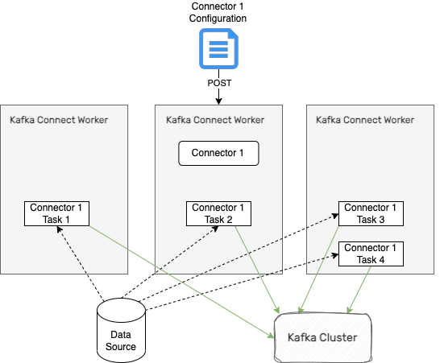

Créez des flux de données entre Kafka et une multitude de systèmes grâce à Strimzi
### Qui suis-je ? Thomas Dangleterre Decathlon - Software Engineer Note: Transition : Créez des flux de données entre Kafka et une multitude de systèmes grâce à Strimzi
<img src="./assets/img/kafka_logo.svg" width="500"> Note: Uses cases : - Messaging - Event sourcing - Activity tracking - Aggregation de logs Système central des SI : -Résilience - Haute disponibilité - Scalabilité Besoin grandissant en échange de données
Note:
<img src="assets/diagram/1_kafka_usual_pattern.drawio.svg" width="600"/> Note:
### Source Connector <img src="assets/diagram/2_source_connector.drawio.png" /> Note: producer
### Sink Connector <img src="assets/diagram/3_sink_connector.drawio.png" width="500"/> Note:
### Plugins Des centaines de plugins existants <!-- .element: class="fragment" data-fragment-index="1" --> Debezium, Redis, OpenSearch, Redis, Mqtt, Google Pub/Sub, Biq Query, Amazon S3, HDFS ... <!-- .element: class="fragment" data-fragment-index="2" --> Attention aux licences <!-- .element: class="fragment" data-fragment-index="3" --> Note:
### Custom Plugin ```java public class MySourceConnector extends SourceConnector { } public class MySinkConnector extends SinkConnector { } ``` Note:
### Créer un Connecteur ```json [2|3-4|3-5|3-6|8] { "name": "file-sink-connector", "config": { "connector.class": "org.apache...FileStreamSinkConnector", "topics": "test-topic", "tasks.max": "10", "file":"/tmp/messages.txt" } } ``` <img src="assets/img/config_file.png" width="50"/> Note: connector.class -> fourni par un plugin topics: une liste de topic, possibilité de mettre une regex à la place tasks.max: configuration spécifique au type de connector.
### Converters ```json { ... "key.converter" : "org.apache.kafka.connect.storage.StringConverter" "value.converter" : "org.apache.kafka.connect.json.JsonConverter" ... } ``` <img src="assets/img/config_file.png" width="50"/> Avro, Protobuf, Json, Json with schema, ByteArray... <!-- .element: class="fragment" data-fragment-index="1" --> Note: tansformation simple et unitaire sur les message pratique pour filtrer, router, renommer des champs...
### Single Message Transforms ```json { ... "transforms": "InsertSource", "transforms.InsertSource.type": "org.apache.kafka.connect.transforms.InsertField$Value" "transforms.InsertSource.static.field": "data_source", "transforms.InsertSource.static.value": "test-file-source" ... } ``` <img src="assets/img/config_file.png" width="50"/> Note: tansformation simple et unitaire sur les message pratique pour filtrer, router, renommer des champs...
 Note:
<img src="assets/img/strimzi-horizontal-color.png" width="600"/> Note:
### Operator Pattern <img src="assets/diagram/5_operator_pattern.drawio.png" width="300"/> Note:
### Strimzi Operators - Cluster Operator <!-- .element: class="fragment" data-fragment-index="1" --> - Topic Operator <!-- .element: class="fragment" data-fragment-index="2" --> - User Operator <!-- .element: class="fragment" data-fragment-index="3" --> Note:
### Cluster Operator - Kafka <!-- .element: class="fragment" data-fragment-index="1" --> - Kafka Connect <!-- .element: class="fragment" data-fragment-index="2" --> - Kafka MirrorMaker (1 et 2) <!-- .element: class="fragment" data-fragment-index="3" --> - Kafka Exporter <!-- .element: class="fragment" data-fragment-index="4" --> - Kafka Bridge <!-- .element: class="fragment" data-fragment-index="5" --> Note:
### KafkaConnect ```yaml apiVersion: kafka.strimzi.io/v1beta2 kind: KafkaConnect metadata: name: my-connect-cluster annotations: strimzi.io/use-connector-resources: "true" spec: ... ``` Note:
### KafkaConnect config ```yaml [3-4|5-10] ... spec: replicas: 3 bootstrapServers: my-cluster-kafka-bootstrap:9092 config: group.id: my-connect-cluster offset.storage.topic: my-connect-cluster-offsets config.storage.topic: my-connect-cluster-configs status.storage.topic: my-connect-cluster-status ``` Note:
### KafkaConnect - Add Plugins ```yaml ... spec: build: plugins: - name: debezium-postgres-connector artifacts: # Types supported : JAR, TGZ, ZIP, # Maven artifacts or Other artifacts - type: tgz url: https://repo1.maven.org/... sha512sum: ... ``` Note:
### KafkaConnect - Image ```yaml ... spec: build: output: type: docker image: my-registry.io/my-org/my-connect-cluster:latest pushSecret: my-registry-credentials ``` Note: Kaniko -> build image dans un container ou sur un cluster kubernetes
```shell kubectl get KafkaConnect NAME DESIRED REPLICAS READY my-connect-cluster 3 True ``` Note:
### KafkaConnector ```yaml [2|4|6|8-9|10_13] apiVersion: kafka.strimzi.io/v1beta2 kind: KafkaConnector metadata: name: file-sink-connector labels: strimzi.io/cluster: my-connect-cluster spec: class: org.apache.kafka.connect.file.FileStreamSinkConnector tasksMax: 10 config: topics: test-topic file: /tmp/messages.txt ``` Note:
### KafkaConnector ```shell kubectl get KafkaConnector NAME CLUSTER CONNECTOR CLASS MAX TASKS READY file-sink-connector connect-cluster io.confluent.connect.s3.S3SinkConnector 10 True ``` Note:
https://strimzi.io/
TODO : Lien des slides